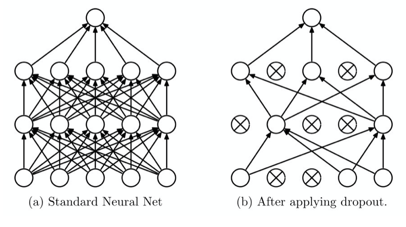

关于作者
关于作者
正则化
为解决网络中常遇到的过拟合问题，我们常使用正则化来通过某些规则计算后加入到损失函数中，通过损失函数约束网络学习方向。 你可以把正则化理解为给网络学习立规矩，告诉他哪些特征是应该学的，哪些是不该学的。
接下来将介绍不同正则化方式。
L1正则化
L1正则化通过计算模型参数的绝对值之和，来限制模型有效参数的数量，从而减少模型的复杂度。你可能会觉得网络复杂度不是多少层，多少神经元已经定好了嘛？ 那如果让网络参数中0的个数变多呢？有效神经元就变少了，这样网络复杂度就变低了。
L1正则化的惩罚项可以写作
其中，w表示模型的参数，表示模型参数的
L1正则化通常用于特征选择。由于L1正则化可以将某些特征的权重设置为0，所以它可以帮助我们找到最重要的特征，同时将不重要的特征趋向于置0，进而实现网络稀疏化，提高模型的泛化能力。
L1正则化的缺点是它不是处处可导的，比如零点。所以当模型参数（例如神经网络的权重）趋近于0时，L1正则化的惩罚项不具有可微性，因此模型参数不会完全等于0，而是以一定的常数因子趋近于0。 所以，很多神经网络在权重衰减公式中使用一阶步骤来解决非凸 L1 正则化问题。L1 范数的近似变体是：
Important
范数和正则化是不同的概念。
范数（Norm）是一种衡量向量的大小的数学概念。在机器学习中，范数通常用于衡量模型参数的大小和复杂度，如L1范数、L2范数等。
正则化（Regularization）是一种通过在模型损失函数中添加惩罚项来避免过拟合的技术。这个惩罚项可以是不同范数，也可以是其他指标。正则化的目的是约束模型的复杂度，防止模型过度拟合训练数据。
L2正则化
L2正则化同样可以用于减少模型的复杂度，避免模型过度拟合训练数据。L2正则化可以通过在模型的损失函数中添加
L2正则化的惩罚项可以写作：
其中，w表示模型的参数，表示模型参数的L2范数，是正则化参数，用于控制正则化的强度。
L2正则化的惩罚项在模型参数趋近于0时仍然具有可微性，因此可以使用一些基于梯度的优化算法，例如梯度下降法。
Dropout正则化
其实Dropout正则化一般被称为Dropout，很少加上”正则化”作为后缀。Dropout正则化可以通过在模型的训练过程中随机地删除一些神经元，从而减少模型的复杂度，避免模型过度拟合训练数据。
在网络训练过程中随机地删除一些神经元，然后在剩余的神经元上进行训练。在每次训练中，每个神经元都有一定的概率（通常设置为0.5或者0.2等较小的值）被删除。 删除神经元可以通过将其输出设置为0来实现。所以并非是把网络中该神经元的连接删除。

在测试过程中，将所有的神经元的输出都乘以一个保留概率，即测试时的Dropout率，通常设置为1。这是因为在测试过程中，我们希望模型能够利用所有的神经元来进行预测，而不是随机地删除一些神经元。
由于Dropout正则化在训练过程中随机地删除一些神经元，因此每次训练的模型都会略微不同，这种随机性可以帮助模型更好地泛化到新数据。
此外，由于Dropout正则化可以视为模型的